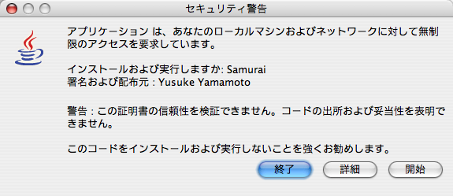
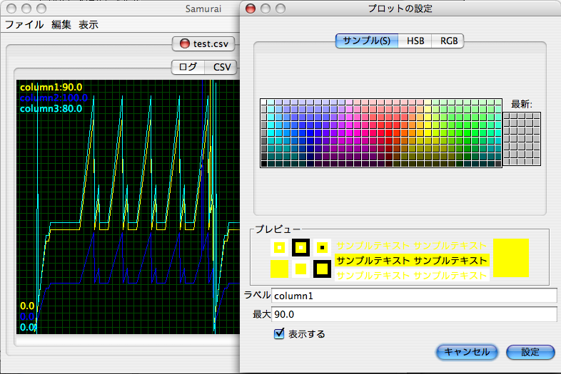
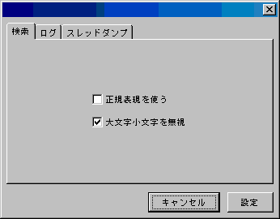

侍 2.1.1 †
 起動(要JDK1.4以降)
起動(要JDK1.4以降)
"侍" とは †
侍 はタブ表示できる GUI の tail ツールです。
標準出力・標準エラー出力をリダイレクトしたログファイルより Java のスレッドダンプのみを切り出して色分け表示したり、-verbosegcオプションによるログをグラフ表示したりできるため特に Java のトラブルシューティングに役立ちます。
システム要件 †
OS: JDK 1.4 以降の実行環境をサポートする Windows や Unix
JDKは以下のページからダウンロードできます。
http://java.sun.com/j2se/1.5.0/ja/download.html
検証済みの解析対象JVM: JDK 1.3.x,JDK 1.4.x,JDK5.0 準拠の Apple/BEA/Sun/HP/IBM 製JVM
JRE がインストールされていない環境では ActiveX ベースのインストーラ をご利用ください(IE のみ)。
起動方法 †
侍 は以下の2種類どちらかの方法で起動させることができます。
Java Web Start による起動 †
ネットワーク経由で起動する方法です。デスクトップやスタートメニューにショートカットを作成できたり、バージョンアップ時に自動的にアップデートされたりなどの特徴があり、お勧めの起動方法です。
J2SDK1.4.0 以上がインストールされている環境でブラウザから以下のアイコンをクリックすることで自動的にインストール、起動を行うことが出来ます。
初回起動時にはセキュリティ上安全でない、起動を勧めない旨のメッセージが表示されますが、気にせず「開始」を押して起動してください。
これは侍がログファイルの読み取り、解析結果のキャッシュとしてローカルファイルシステムにアクセスする必要があるためです。これはテンポラリディレクトリに出力されます。悪意のあるコードは含まれておりませんが心配のある場合は付属のソースコードをご覧頂くか、コードを逆コンパイルの上解析して頂いて構いません。
信頼の出来ない署名付きのJava Web Startを起動することは危険な行為であることを常に認識してください。
技術上、Java Web Start アプリケーションはあなたの PC を乗っ取り、重大な損害をもたらすことが可能です。
コンピュータのセキュリティの設定によっては samurai.jnlp というファイルがダウンロードされるだけで侍が起動しない場合があります。その場合はダウンロードした samurai.jnlp をダブルクリックしてください。

画面1 セキュリティ警告画面
コマンドラインからの起動 †
DOSプロンプトなどのターミナルから起動する方法です。
http://yusuke.homeip.net/samurai/samurai.jar をダウンロードしてください。
$java -jar samurai.jar で起動できます。
ただし自動アップデートはされないので定期的に更新がないかチェックしてください。
スレッドダンプの解析 †
初期画画面 †
侍 を起動すると画面2のようなウィンドウが表示されます。ログファイルをドロップすると監視が開始され、メッセージが追加される毎にリアルタイムで読み込まれます。

画面2 初期画面
スレッドダンプタブ †
ログファイル中にスレッドダンプを検出すると自動的にスレッドダンプタブ(画面3)が表示されます。

画面3 スレッドダンプタブの表示
スレッドダンプタブをクリックすると、解析結果が表示されます。
アイドル状態のスレッドは灰色で、ブロック(同期待ち)状態のスレッドは赤で表示されます。
解析結果にはテーブル表示(画面4)/全スレッド表示(画面5)/時系列表示(画面6)の３通りの表示があります。 多くの場合はテーブル表示でスレッドの使用状況を確認し、時系列表示でスレッドの動きを確認することで解析を進めます。
常に赤く表示されているスレッドや、全てのスレッドダンプにおいて同じ個所で停止しているスレッドは問題を抱えている可能性があります。

画面4 テーブル表示

画面5 全スレッド表示

画面6 時系列表示
ヒープ使用状況の解析 †
Java は起動時に -verbose:gc というオプションをつけるとガベージコレクションを行った際にメッセージが標準エラー出力に記録されます。 メモリリークしていないか、ヒープが十分に確保されているかなどがこのメッセージからわかるのですが、文字で表現されているため解析が困難です。 侍にこのログを渡すと「メモリ」というタブが現れます。赤い線がガベージコレクション前の使用量、黄色い線がガベージコレクション後の使用量、グレーの線がコレクションに要した時間を表します。
表示中のグラフは Ctrl+C (Macでは Cmd+C) でコピーすることができます。

画面7 メモリタブ
CSV ファイルのグラフ化 †
侍は CSV 形式のテキストファイルを渡すことで即座に内容をグラフ化してくれます。
表示中のグラフは Ctrl+C (Macでは Cmd+C) でコピーすることができます。
侍に渡したファイルが CSV 形式かどうかは拡張子で判断されます。

画面8 CSVファイルのグラフ化
グラフ表示のカスタマイズ †
ヒープ使用状況・CSVファイルはグラフ表示されますが、この画面は簡単なカスタマイズを行うことが可能です。
やりかたは簡単で、グラフ左上に表示されているラベルをクリックして現れるダイアログで設定後、[設定]ボタンを押すだけです。 折れ線の色、表示ラベル、最大値(グラフの X 軸方向の可視領域)を設定できます。

画面9 グラフのカスタマイズ
ログのインクリメンタルサーチ機能 †
侍は手放しでも便利ですが、スレッドダンプやヒープ使用状況の解析だけがとりえではありません。侍へドロップしたファイルはリアルタイムに監視され、ログが追加されると都度ログタブに表示されます。つまり Unix における tail -f filename と同等に利用できます。 また、ログ・スレッドダンプどちらのタブでも内容の検索を行うことが出来ます。いわゆるインクリメンタルサーチ機能で、キーボードをタイプした瞬間からキーワードがハイライトされます。キーワードを入力後は Ctrl+G(Mac では Cmd+G)または F3で次、Shift+Ctrl+G(Mac では Shift+Cmd+G)または Shift+F3 で前の候補がハイライトされます。 設定パネルより正規表現の使用・不使用、大文字小文字の区別・無視も設定できます。

画面10 候補のハイライト

画面11 設定パネル
FAQ †
Q1. 侍は WebLogic 専用ですか？
A1. いいえ。侍はどのような Java プログラムにも使えます。ただし、スレッドダンプ / verbosegc ログの解析機能は Apple(1.4.2_05),BEA(7.0SP4,8.1SP2,8.1SP4,9.0GA),Sun(1.3.1_08,1.4.1_05)の JVM でのみ検証されています。
Q2. 侍の名前の由来はなんですか？
A2. 意味はありません。商標上の問題が発生しないよう一般名詞にしています。
Q3. 侍はJDK1.3.x(またはそれ以前)で動きますか？
A3.いいえ。JDK1.4〜のAPIを使っているため1.3.1以前では動きません。ただし、JDK1.3.x以前のログの解析に使うことはできます。
Q4. CSV をグラフ化してくれるのは便利そう。データには数字だけじゃなく文字列もふくまれているのですが、読み込めますか？
A4.はい。データ中に文字列があった場合はハッシュ値で無理矢理プロットします。グラフに動きがあったら何か値が変わったと思ってください。
Q5. CSV ファイルをうまく認識してくれません。何をもって CSV ファイルだと判断していますか？
A5. 拡張子が".csv"となっている場合だけグラフ化してくれます。
Q6. Kill Bill モードってなんですか？
A6. 配色が異なり、日本刀の扱いがうまくなったような気がするモードです。"kill bill" とタイプすれば突入します。
Q7. スレッドダンプが正常に表示されません
A7. 未確認のJVMであったり、予期していないフォーマットでスレッドダンプが出力されている場合など正常にスレッドダンプをパースできないことがあります。出来る限り対応したいと思いますので yusuke＠mac.com へファイルをご送付いただければ幸いです。
Q8. Kill Bill2 モードってなんですか？
A8. 配色が異なり、五点掌爆心拳をマスターした気持ちになれるモードです。
Q9. Matrix モードってなんですか？
A9. 配色が異なり、ログファイルの向こう側に仮想世界が見えるような気がするモードです。
ライセンス †
- 侍は営利、非営利目的を問わずどなたでも無償で使用、改変を加えない複製、またそれの配布を行うことが出来ます。
- 個人、会社内での利用の範囲内であれば付属のソースを改変してご利用頂くことが出来ます。改変したものはソース、バイナリ等いかなる形でも個人間、組織内を超えた再配布はご遠慮ください。
免責事項 †
- スレッドダンプの解析には Java に関する専門的な知識が必要です。侍は Java アプリケーションのハング、スローダウン時のスレッドダンプ解析を助けますが、トラブルの解決をお約束するものではありません。
- 侍を利用することによって発生した損害に対して作者は一切責任を負いません。
What's new! †
- 2.1.1リリース(2006/5/12)
- IBM JDK1.4.2の-verbosegcログをサポート(JDK1.4.2_08でテスト)
- IBMのJavacoreでブロック状態を検出できない場合があったのを修正
- スレッドダンプ表示を調整
- スレッドダンプ表示のフォントファミリ/フォントサイズ設定が反映されていなかったのを調整
- 2.1リリース(2006/5/11)
- デッドロック検出機能の追加
- スレッドダンプ解析結果のクリア機能を追加
- ロック依存関係にアンカー、ハイパーリンクを追加
- IBM Javacore でロック状況をスタックトレースに表示する機能を追加
- 2.0.6リリース(2006/5/05)
- スレッドダンプ解析結果保存機能の追加
- weblogic.Admin コマンドによるスレッドダンプ出力に対応
- 2.0.5リリース(2006/4/29)
- スレッドダンプ表示の改善
- スレッドダンプ表示のパフォーマンス改善
- 検索機能のパフォーマンスをさらに最適化
- WebLogic? Server 9.x のスレッドダンプ名に対応
- ログファイルがローテーションしたときにリフレッシュ出来ていなかったのを修正
- グラフをクリップボードにコピー出来なくなっていたのを修正
- 検索時の「大文字小文字を一致」の動作が逆になっていたのを修正
- 2.0.4リリース(2006/1/16)
- JRockit1.4.2_08のverbosegcログに対応
- 検索機能のパフォーマンス(特に前方検索)を最適化
- 2.0.3リリース(2006/1/13)
- 2.0.2リリース(2006/1/6)
- ドラッグイベントへの視覚的フィードバックを追加
- CSVファイルでマルチバイトのタイトルが文字化けしていたのを修正
- 2.0.1リリース(2006/1/3)
- Xloggc オプションで出力されたGCログの解析に対応
- 2.0.0リリース(2005/12/31)
- 複数ファイルのモニタに対応
- Mac OS X環境でアプリケーションメニューに対応
- 「最近のファイルを開く」機能を追加
- CSVファイルのグラフ化は拡張子が".csv"のファイルの場合のみ働くようになった
- 存在しないスレッドがテーブル表示で黒く表示されるようになった
- Matrix モードを追加
- 1.2.9リリース(2005/10/19)
- 複数ファイルの読み込みが出来なくなっていたのを修正。
- kill bill モードを復活。
- 1.2.8リリース(2005/9/2)
- スレッドのリストをクリックした際にスレッドの時系列表示が空になってしまう現象を修正。1.2.7におけるリグレッション。
- 1.2.7リリース(2005/8/23)
- スレッド名が途中で変わる場合、スレッド名が重複している場合に解析が正常に出来ていなかった不具合を修正
- IBMのjavacoreに対応するため複数のファイルの読み込みに対応した。複数のファイルをドロップした場合は辞書順で読み込みます。
- MacOSXのスクリーンメニューバーに対応
- MacOSXのBrush metal LAFに対応
これは OS の制限によるものです
- 1.2.6リリース(2005/8/23)
- IBM JDK1.4.0/1.3.1 の javacore に対応
- 1.2.5リリース(2005/8/18)
- JRockit1.5.0_03(WLS9.0GA付属) に対応
- 1.2.4リリース(2005/8/17)
- JRockit1.4.2_05(WLS8.1SP4付属) に対応
- 1.2リリース(2004/4/4)
- 虚無僧や CSV ファイルのグラフ化機能が追加されました。WebLogic その他のJava アプリケーションのチューニングに。
- 1.1リリース(2004/3/31)
- verbose:gc ログの解析ができるようになりました。
- ヒープサイズやガベージコレクションのチューニングに。
サポート †
- 侍に関するご意見、ご感想、改善要求などはお気軽にどうぞ。
- すみません。虚無僧タブがでないんですけど。CSVファイルをドラッグするだけじゃだめですか？ -- mask?
ファイルの先頭から CSV でないと認識してくれません。余分な改行などが入っていたら消してみてください。うまくいかない場合は yusuke＠mac.com へ送っていただくようお願いします。
- ナイスです。赤が多すぎると、ハラキリするようにしてください。 -- akitada?
すばらしいアイディアですね。Kill Billモードと共に検討させていただきます。
- BEA Korea エンジニアです. 本?に立派なツ?ルです. 視力の?くなる事が消えますね. (翻訳機を通じる文) -- チョン・ミョンフン?
- すばらしいです。SUNのJVMの標準出力をそのままグラフにしてくれました。感激です。IBMのJDKでの対応計画はいかがですか？ -- naonao?
javacore については1.2.6 で対応しました。verbosegcはまだです。
- かなりのお役立ちツールです。文字列検索の強化が望まれます -- m-ksk?
tail としてお使いですね？具体的にどのような機能強化をお望みでしょうか？
- JRockit 1.4.2_05 で使えません -- akitada?
バージョン1.2.4で対応しました
- ヒープ使用状況の解析について、-verbose:gc の出力だけではなく、-Xloggc の出力フォーマットにも対応していただけないでしょうか？あと、ものすごくヒトゴトなんですが、EclipsePlugin? な「侍」を作ってみませんか？(なれなれしくてごめんなさい) -- おれ?
毎度ありがとうございます！GCログは各種VMで出力が異なるので、順に対応していきたいと思っています。
Eclipse Plugin のバージョンが欲しい！って声は幾つか頂いているので、そのうちやりたいと思います。
- GCログはモノによって半角SP区切りですが、中身をどう区切ったらうまくグラフ化されるのでしょうか？？単にカンマ区切りにしてもNGでした。。 -- おじ?
半角SP区切り・・、何のJVMをお使いでしょう？
- やー、すごく便利。うまく動きました。JavaWebStart?アプリも初めて起動しました(笑) -- かみやん?
- ログの文字コードを(指定できるように変更できないものかと思いまして -- harawata?
- すみません、途中で送信してしまいました。ログの文字コードを（出来ればタブごとに）指定できると嬉しいです。ちなみに、現在ソースコードの配布はされていないのでしょうか？ -- harawata?
文字コードの指定は近いうちに実装予定です。今しばらくお待ち下さい。
ソースコードは現在頻繁にリファクタリングが行われている状態で、クラス構成が不安定なので公開しておりません。
設計が安定したら公開する予定です。
侍は無償で全ての機能をご利用頂けます。
PayPalで寄付をして頂くことも可能です。

Counter: 37304,
today: 70,
yesterday: 96
Copyright 2003-2007 (c) Yusuke Yamamoto All rights reserved.
![[PukiWiki]](../samurai/image/pukiwiki.png "[PukiWiki]")
{kind=link}
{kind=link}
{kind=link}